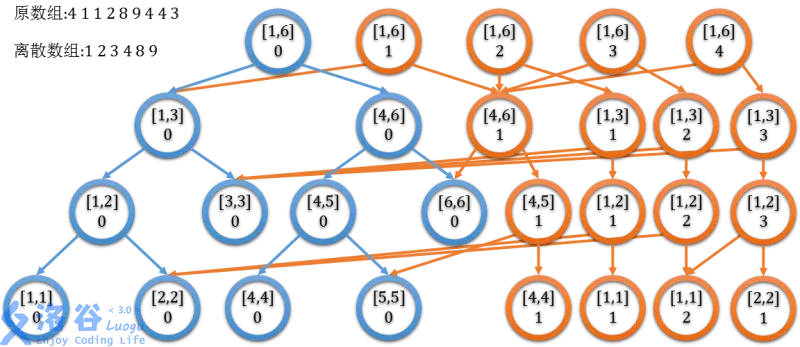

线段树分好几类.接下来分开讲解.
线段树维护的是一段区间上的某些信息.比如最大值,加和等.
线段树写法有类似堆的儿子是2fa和2fa+1定死的以及类似栈分配内存的++top两种.由于动态开点比较方便,笔者一律采用第二种.
线段树写法
如果是Flu的码风,写法如下:1
2
3
4
5
6push_down
push_up
aadd
bbuild
qquery
cchange
写法要点:
所有tag等到pd结束时再回归初始值,在某吉司机线段树的时候由于取最大值非常容易写错 .
#define ls dat[mod].land#define rs dat[mod].r加上!!!不然你写着不累吗…以下是push_up和push_down函数的标准写法:
1
2
3
4
5
6
7
8
9void push_up(int mod){
dat[mod].val=dat[dat[mod].l].val+dat[dat[mod].r].val;
}
void push_down(int mod){
if(dat[mod].tg!=0){
xxx;
dat[mod].tg=0;
}
}以下是查询函数的正确写法:
1
2
3
4
5
6
7
8
9
10
11
12
13
14
15
16
17
18
19int qquery(int mod,int l,int r,int tl,int tr){
if()return x;
int mid=(l+r)>>1,res=0;
push_down(mod);//
if()res xxx qquery(dat[mod].l,l,mid,tl,tr);
if()res xxx qquery(dat[mod].r,mid+1,r,tl,tr);
return res;
}
void aadd(int mod,int l,int r,int tl,int tr,int val){
if(){
add;
return;
}
mid;
push_down();//
if()
if()
push_up(mod);//
}
标记永久化
这是一个线段树的技巧.适用条件:标记不会溢出(炸int,炸long long,etc).
标记永久化的思想是,向下一路叠加,向上一路修改.可能会没有pushdown.
举例:扫描线的线段树,给n个点,区间加上一个tag,减一个tag,每次求所有tag大于0的点的和.(保证任意时刻tag不小于0)
全局查询,这是一个很重要的点.所以不必刻意下传tag,只需要不断维护根节点信息即可.我们定义mxx是该节点维护的最大长度,val是当前长度,lazy是一个能叠层数的tag,下传加的时候直接加,减的时候判定以下该节点能不能承受得住,如果可以就减掉,同时更新这个节点的val是子节点的加和,如果不行就暴力去左右子树减1.
复杂度分析.实际上暴力递归左子树右子树的过程仍然是logn的,因为当初扫描线加tag的时候复杂度是log,现在删的时候复杂度肯定也会是logn级别的.
动态开点线段树
不会,挖坑
内存计算
普通线段树的内存是 $O(n\log n)$ .计算的时候由于计算器大多数没有 $\log_2$ 的选项,根据换底公式可以取 $\lg$ 然后乘上 $1.44$ 一个常数得到实际上的内存占用,所谓的线段树20倍空间实际上应该是对主席树说的.
记住,1e7大小的int大概是40Mb.
zkw线段树
重口味线段树?没用过
势能线段树(吉司机线段树)
用于求区间最大值最小值的变化.例如区间查询最大值及区间和,但是修改是 a=min(a,v) 这样取最小值的版本,不好修改.势能线段树维护的有: val 区间加和,以及叶节点的值, mx 最大值, cnt 最大值出现次数, se 严格最小值, tg 表示的是最小值tag,下传的时候所有大于这个值的都会被砍掉.
然后下传分为三种情况:比最大值大,直接忽略.比最大值小,但是比次大值大,那就可以打一个tag然后结束,如果比这俩都小那就只好暴力遍历左右子树重复操作然后更新节点.时间复杂度比较玄学,听说是介于 $O(n\log n)~O(n\log^2n)$ 的能过级别.
写法比较麻烦,这里强调一下怎么写::首先,因为更新比较麻烦,建议先写左子树,然后再复制粘贴改成右子树的版本.
pushup1
2
3先更新加和(不用懒标记)
然后更新最大值最小值
然后更新次大值次小值和最大值出现次数最小值出现次数
pushdown(非常难写)1
2
3
4
5
6先传加和标记,(和,最大值,次大值,最小值,次小值,其中次小值特判是不是inf再加)最后tgsu置0
然后判断变小标记有没有(置inf)
如果有就更新值和最小值以及次小值的变化.
最大值标记同理.
可持久化线段树
为了实现版本回退提供的特殊数据结构.满足一次操作新建logn个节点,然后支持历史版本查询和回退.放一张图:

也就是线段树克隆子枝的一个过程.
应用
区间加一个 等差数列 ,单点查询.
建一个普通线段树,维护 差分数列 ,然后查询就是1-n的和,修改就是 $al$ 加首项, $a{l+1}-ar$ 加公差, $a{r+1}$ 减末项即可.
求最长上升M元子序列
使用dp.设 $f[i][j]$ 表示以 $a_j$ 结尾的长度为i的序列的个数,有
可以用树状数组,也可以用线段树维护.具体实现:先循环i,离散化,树状数组存储 $f[i-1][a_i]$ ,循环到j的时候加上这么多就行(比它小的),然后数组加上 $f[i-1][a_j]$ .注意j要从小到大循环,每次询问 $a_j-1$ 保证闭区间求和.
GSS系列(1&3)
SPOJ上面的一系列数据结构题,线段树维护一些奇奇怪怪的东西:维护一段序列,单点修改,问一段区间的 最大子段和(也就是求 $\sum_{i=l}^ra_i,L\le l\le r\le R$ )
我们先对子段和进行分析:一段大区间上的子段和只可能是左边的,或者右边的,或者一段横贯左右两个小区间的子段和.
横贯两个区间显然左区间的最大包含右边的子段和和右边包含左边的最大子段和拼起来就完了.对此我们魔改
push_up函数,也就是大区间包含小区间的过程.我们需要维护val表示区间直接相加的和,res表示区间的最大子段和,lmax表示区间包含左边界的最大子段和,rmax同理.
由于lmax必须包含左边界,所以区间的lmax要么是左区间的lmax要么是左区间和加上右区间的lmax.rmax同理.
所以我们可以做出
push_up函数:1
2
3
4
5
6void push_up(int mod,int l,int r){//down stream
dat[mod].val=dat[dat[mod].l].val+dat[dat[mod].r].val;
dat[mod].lmax=max(dat[dat[mod].l].lmax,dat[dat[mod].l].val+dat[dat[mod].r].lmax);
dat[mod].rmax=max(dat[dat[mod].r].rmax,dat[dat[mod].r].val+dat[dat[mod].l].rmax);
dat[mod].res=max(max(dat[dat[mod].l].res,dat[dat[mod].r].res),dat[dat[mod].l].rmax+dat[dat[mod].r].lmax);
}查询也一样,我们可以把区间缩成一个一个的点,然后最后的区间合并成一个点,然后结果就是最后的节点里面装着的res.
1
2
3
4
5
6
7
8
9
10
11
12
13strnode qquery(int mod,int l,int r,int tl,int tr){
if(tl<=l&&r<=tr)return dat[mod];
int mid=(l+r)>>1;
if(tr<=mid)return qquery(dat[mod].l,l,mid,tl,tr);
if(mid<tl)return qquery(dat[mod].r,mid+1,r,tl,tr);
strnode a,b,res;
a=qquery(dat[mod].l,l,mid,tl,tr),b=qquery(dat[mod].r,mid+1,r,tl,tr);
res.lmax=max(a.lmax,a.val+b.lmax);
res.rmax=max(b.rmax,b.val+a.rmax);
res.val=a.val+b.val;
res.res=max(max(a.res,b.res),a.rmax+b.lmax);
return res;
}注意
qquery中的递归顺序:正常线段树中的qquery是只要区间沾一点就递归加,现在是必须完全覆盖,所以要稍微改一下递归顺序.GSS4 给一段序列,区间每一个数开根号(向下取整),区间求和.显然还是使用线段树去维护的.
可以发现一个性质:即便是 $10^{18}$ 在开6次根号之后也就变成1了,所以每个数最多被开6次根号.
所以我们需要使用线段树维护一个val和是否是1的tag,其中开根号就暴力求,如果区间都是1或0直接忽略,求和就线段树求和.
1
2
3
4
5
6
7
8
9
10
11
12void cchange(int mod,int l,int r,int tl,int tr){
if(dat[mod].tg)return;
if(l>=r){
dat[mod].val=sqrt(dat[mod].val);
if(dat[mod].val<=1)dat[mod].tg=1;
return;
}
int mid=(l+r)>>1;
if(tl<=mid)cchange(dat[mod].l,l,mid,tl,tr);
if(tr>mid)cchange(dat[mod].r,mid+1,r,tl,tr);
push_up(mod);
}HH的项链,给定序列,查询区间[l,r]中有多少种不同的数字.
对于去重首先考虑离线做法.按照r升序排列所有询问,然后从左到右扫描(a).扫什么?建一个vis数组表示这个数上一次出现的位置,然后如果这个数上一次出现了(b),那就线段树减(b,-1),该点相加(a,1),举例:
序列 1 1 4 5 1 4 ,从左到右扫分别是(线段树叶子节点):
100000 010000 011000 011100 001110 000111
假如碰到询问,假如说是[2,5],那就求前缀和(5)-(2-1)即可.HH的项链加强版:给定序列区间中出现两次(及以上)不重的数.
考虑5的魔改,我们使用vis记录第一次出现的位置,这次我们拓展成last1和last2表示第一次出现以及第二次出现(第二次以上出现就没意思了),第一次出现记录last1,第二次出现记录last2,同时对last1对应的位置+1(因为对last2位置+1会错,区间l可能不覆盖第一次的位置)第二次及以上就覆盖,add(last1,-1),add(last2,1),然后向下传递last1=last2,last2=pos.查询不变.
拓展:同时出现n次才算:维护last1-lastn即可.区间查询sin值和,区间加上角度v.
考虑公式
我们维护该点的sin,cos,然后打一个懒标记.
然后发现tag也可以直接加.于是变成普通线段树题了.
区间查询和,单点修改,区间对某个数取模.
首先,模数大的时候是不会变的,如果模数小,那么这个数至少被砍半.所以一个数最多被取模 $\log n$ 次,又因为在树上操作,一次的复杂度不会超过 $\log^2n$ .代码十分好写,甚至没有pushdown,记录区间加和和max,如果取模取到了那就暴力推平.
区间加,查询区间gcd.
转成差分之后就很好做了.